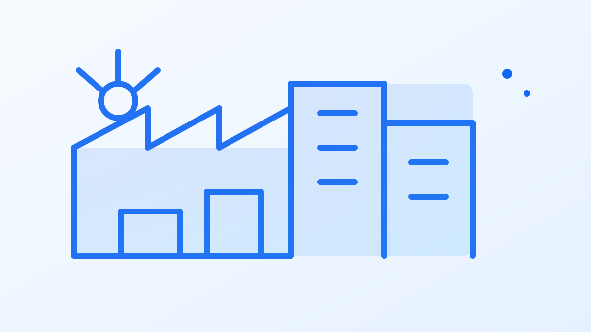
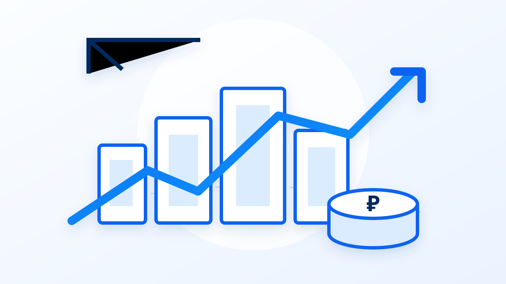

---
---
{% capture base %}{% include site-base.html %}{% endcapture %}
{% assign page = base | replace: '.founder{display:grid;grid-template-columns:.78fr 1.05fr .9fr;gap:27px;align-items:stretch}.portrait{overflow:hidden;border-radius:26px;border:1px solid var(--line);box-shadow:var(--shadow);background:#eef4fa}.portrait img{width:100%;height:100%;object-fit:cover;object-position:center}', '.founder{display:grid;grid-template-columns:.78fr 1.05fr .9fr;gap:27px;align-items:start}.portrait{margin:0;overflow:hidden;border-radius:26px;border:1px solid var(--line);box-shadow:var(--shadow);background:#eef4fa;aspect-ratio:810/870}.portrait img{width:100%;height:100%;object-fit:cover;object-position:center;image-rendering:auto}' %}
{% assign page = page | replace: '.industry-art{height:136px;background:linear-gradient(135deg,#e6f2ff,#f9fcff);position:relative}.industry-art:before{content:"";position:absolute;inset:26px 18%;border:2px solid #71aaff;transform:skewX(-18deg)}.industry-art:after{content:"";position:absolute;inset:46px 32%;border:2px solid #71aaff;border-radius:50%}', '.industry-art{aspect-ratio:16/9;background:#f3f7fd;position:relative;overflow:hidden;border-bottom:1px solid var(--line)}.industry-art:before,.industry-art:after{display:none}.industry-art img{width:100%;height:100%;object-fit:cover;object-position:center;transition:transform .35s ease}.industry:hover .industry-art img{transform:scale(1.025)}' %}
{% assign page = page | replace: '<div class="industry-art"></div><div class="industry-body"><h3>Производство</h3>', '<div class="industry-art"></div><div class="industry-body"><h3>Производство</h3>' %}
{% assign page = page | replace: '<div class="industry-art"></div><div class="industry-body"><h3>АПК и пищевая промышленность</h3>', '<div class="industry-art"></div><div class="industry-body"><h3>АПК и пищевая промышленность</h3>' %}
{% assign page = page | replace: '<div class="industry-art"></div><div class="industry-body"><h3>Оборудование и роботизация</h3>', '<div class="industry-art"></div><div class="industry-body"><h3>Оборудование и роботизация</h3>' %}
{% assign page = page | replace: '<div class="industry-art"></div><div class="industry-body"><h3>Экспорт</h3>', '<div class="industry-art"></div><div class="industry-body"><h3>Экспорт</h3>' %}
{% assign page = page | replace: '<div class="industry-art"></div><div class="industry-body"><h3>IT и автоматизация</h3>', '<div class="industry-art"></div><div class="industry-body"><h3>IT и автоматизация</h3>' %}
{% assign page = page | replace: '<div class="industry-art"></div><div class="industry-body"><h3>Инвестиционные проекты</h3>', '<div class="industry-art"></div><div class="industry-body"><h3>Инвестиционные проекты</h3>' %}
{{ page }}
